Maple revision
_________________________________________________________________________________
Exercise 1
| > | x[1] := sin(theta) * sin(phi); |
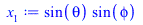 |
(1) |
| > | x[2] := sin(theta) * cos(phi); |
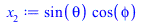 |
(2) |
| > | x[3] := cos(theta); |
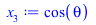 |
(3) |
| > | simplify(x[1]^2 + x[2]^2 + x[3]^2); |
| (4) |
_________________________________________________________________________________
Exercise 2
| > | u := 8-(x-y)^2*(x+y)^2*(16-4*x^2-y^4); |
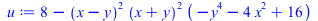 |
(5) |
| > | v := subs( x = 2*cos(t), y = 2*sin(t), u); |
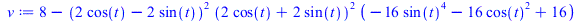 |
(6) |
| > | simplify(v); |
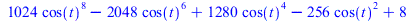 |
(7) |
| > | combine(v); |
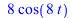 |
(8) |
_________________________________________________________________________________
Exercise 3
| > | solve({a*x+b*y+c*z=1,
a*y+b*z+c*x=1, a*z+b*x+c*y=1}, {x,y,z}); |
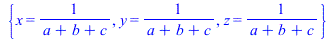 |
(9) |
_________________________________________________________________________________
Exercise 4
| > | fsolve(x^4+sin(x)=10^4,{x=10}); |
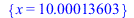 |
(10) |
_________________________________________________________________________________
Exercise 5
| > | f := (x) -> (exp(x) + x^7)/(exp(x) - x^7); |
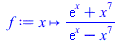 |
(11) |
| > | evalf(f(5)); |
| (12) |
| > | seq( evalf(f(n)), n = 0.. 50); |
| (13) |
| > |
_________________________________________________________________________________
Exercise 6
| > | with(plots): |
| > | display(
implicitplot(x^4+y^4=4,x=-3..3,y=-3..3), plot([(2+sin(8*t))*cos(t),(2+sin(8*t))*sin(t),t=0..2*Pi]) ); |
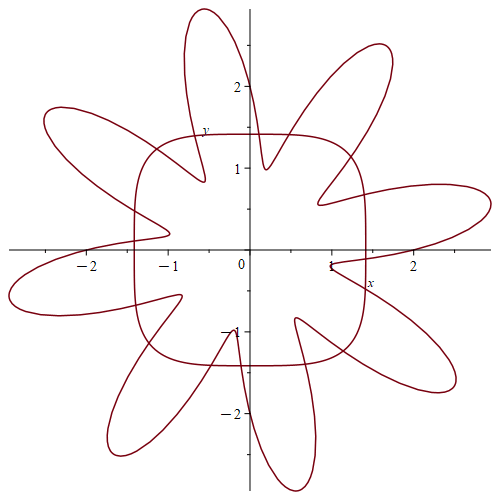 |
_________________________________________________________________________________
Exercise 7
| > | plot(
[tan(Pi*x),cot(Pi*x),-1,1], # functions to plot x=-4..4, # horizontal range -2..2, # vertical range scaling=constrained, # same scale on both axes discont=true # skip over discontinuities ); |
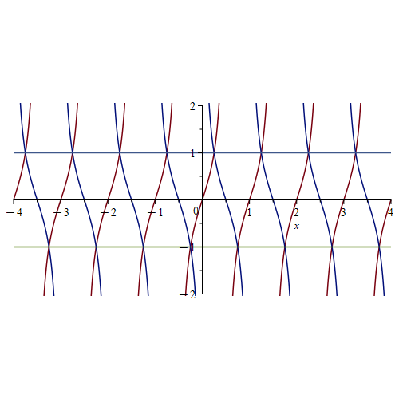 |
_________________________________________________________________________________
Exercise 8
| > | restart; |
| > | f := (t) -> ((2+sqrt(3))*t-1)/(2+sqrt(3)+t); |
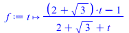 |
(14) |
| > | g := (t) -> f(f(f(t))); |
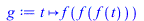 |
(15) |
| > | h := (t) -> g(g(t)); |
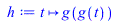 |
(16) |
| > | simplify(g(t)); |
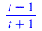 |
(17) |
| > | simplify(h(t)); |
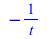 |
(18) |
_________________________________________________________________________________
Exercise 9
| > | y := sin(10*x); |
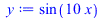 |
(19) |
| > | (diff(y,x$8)/y)^(1/8); |
| (20) |
| > | simplify(%); |
| (21) |
| > |
_________________________________________________________________________________
Exercise 10
Here is the efficient method using the seq() command:
| Error, invalid input: seq expects between 1 and 3 arguments, but received 0 |
| > | plot([seq(n^(3/2) * x^n * (1-x)^2,n=1..10)],x=0..1); |
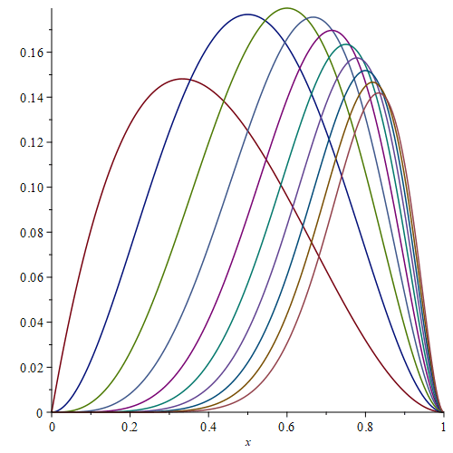 |
Here is the less efficient method with more typing:
| > | plot([
x * (1-x)^2, 2^(3/2) * x^2 * (1-x)^2, 3^(3/2) * x^3 * (1-x)^2, 4^(3/2) * x^4 * (1-x)^2, 5^(3/2) * x^5 * (1-x)^2, 6^(3/2) * x^6 * (1-x)^2, 7^(3/2) * x^7 * (1-x)^2, 8^(3/2) * x^8 * (1-x)^2, 9^(3/2) * x^9 * (1-x)^2, 10^(3/2) * x^10 * (1-x)^2 ],x=0..1); |
 |
_________________________________________________________________________________
Exercise 11
| > | y := x^4*(1-x)^4/(1+x^2); |
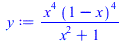 |
(22) |
| > | int(y,x); |
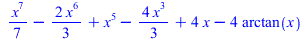 |
(23) |
| > | int(y,x=0..1); |
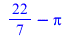 |
(24) |
| > | simplify(diff(y,x)); |
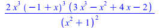 |
(25) |
| > | plot(y,x=0..1); |
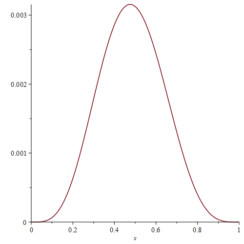 |
The hump has position 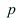 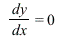 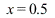 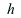 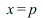 and height
and height  , where
, where
by putting  .
.
| > | p := fsolve(diff(y,x)=0,x=0.5); |
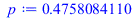 |
(26) |
| > | h := subs(x=p, y); |
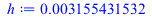 |
(27) |
_________________________________________________________________________________
Exercise 12
| > | a := (n) -> evalf((1+1/n)^n/exp(1)); |
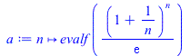 |
(28) |
| > | seq(a(n),n=1..100); |
| (29) |
The first number greater than 0.99 occurs around the middle of the list, close to 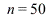
look at a shorter list centred around that value:
| > | seq(a(n),n=48..52); |
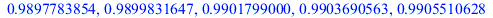 |
(30) |
We see that 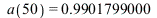
Here is a slicker way:
| > | min(op(select(n -> (a(n)>0.99),[seq(n,n=1..100)]))); |
| (31) |
| > |
| > |
| > |
| > |